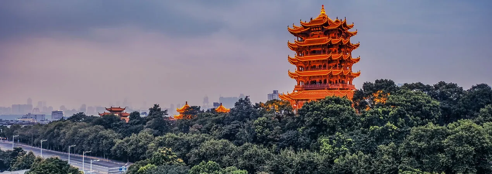
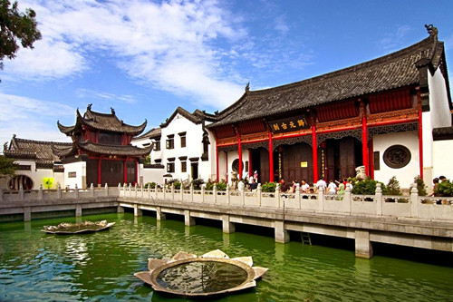
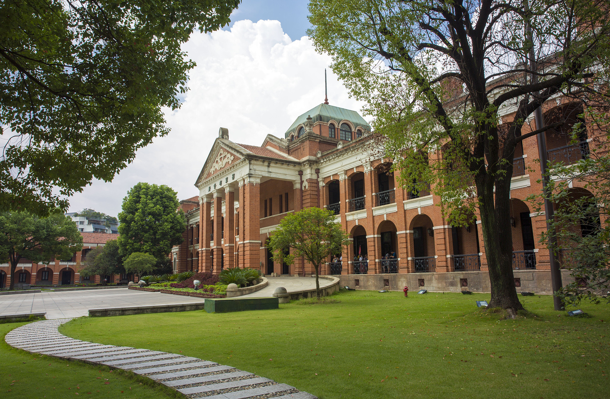

The Yellow Crane Tower, one of China’s "Four Great Towers," is Wuhan’s most iconic landmark—with a history dating back to 223 AD during the Three Kingdoms period. Though the original tower was destroyed and rebuilt multiple times (the current structure dates to 1985), it retains the grandeur of its ancient predecessors. Perched on Snake Hill, 51.4 meters tall, it offers panoramic views of the Yangtze River, the Yangtze River Bridge, and Wuhan’s skyline.The tower’s architecture blends Tang and Song Dynasty styles—red pillars, curved eaves, and golden-tiled roofs adorned with mythical creatures. Inside, each floor has exhibits showcasing Wuhan’s history: ancient calligraphy, paintings of the tower through the ages, and replicas of historical artifacts. The 5th floor’s observation deck is the best spot for photos—on clear days, you can see the Yangtze stretching to the horizon.
Autumn (October–November): Clear skies, mild weather, and great visibility for river views.
Spring (March–April): Cherry blossoms at the tower’s base add a romantic touch.
Entry Fee:70 CNY/adult; 35 CNY/students (with valid ID); free for kids under 1.2 meters.

Guiyuan Temple, founded in 1658 during the Qing Dynasty, is one of Wuhan’s most important Buddhist temples—and a peaceful escape from the city’s bustle. Nestled in Hanyang District, it covers 15,000 square meters and follows traditional Chinese temple layout: a central axis with three main halls, surrounded by gardens and smaller shrines.The temple’s highlights include the "Hall of the Great Buddha" (housing a 6-meter-tall bronze statue of Sakyamuni Buddha), the "Arhat Hall" (with 500 clay statues of Arhats—each with unique expressions, from smiling to solemn), and the "Garden of Meditation" (a quiet courtyard with lotus ponds and ancient pine trees). Every Lunar New Year, the temple hosts a popular "fortune-telling" event—locals draw bamboo slips to predict their luck for the year.
Morning (8:00 AM–10:00 AM): Quiet, with monks conducting morning rituals and fresh incense in the air.
Summer (July–August): Lotus flowers bloom in the temple’s ponds, adding color to the grounds.
Entry Fee:10 CNY/adult; free for kids under 1.3 meters and monks.

The Wuchang Uprising Memorial Hall, located in Wuchang District, commemorates the 1911 Wuchang Uprising—a pivotal event that led to the end of China’s Qing Dynasty and the birth of the Republic of China. Housed in the former headquarters of the Qing Dynasty’s Hubei Military Government, the building is a striking example of early 20th-century architecture: red brick walls, white columns, and a domed roof.Inside, exhibits include historical photos, weapons used in the uprising, personal items of revolutionaries, and interactive displays (e.g., a replica of the uprising’s command center). The most moving exhibit is the "Uprising Timeline"—a wall that details the 24 hours of the revolution, from the first shot fired to the capture of the government building. It’s a must-visit for anyone interested in modern Chinese history.
Year-round: Indoors (20°C–25°C), open Tuesday–Sunday (closed Monday).
Weekdays: Fewer crowds than weekends—better for focusing on the exhibits.
Entry Fee:Free (book tickets online 1 day in advance via the memorial hall’s official website).